Chapter 4 Ejercicio 4
4.1 Enunciado y variables
Para este ejercicio se utiliza el conjunto de datos de nombre College, que se puede encontrar en la librería ISLR2. El fichero contiene una serie de variables para \(777\) universidades de Estados Unidos. Las variables son:
Private: Un indicador de si la universidad es pública o privada.Apps: Número de solicitudes recibidas.Accept: Número de solicitudes aceptadas.Enroll: Número de nuevos estudiantes matriculados.Top10perc: Nuevos estudiantes en el top \(10\%\) de su clase de secundaria.Top25perc: Nuevos estudiantes en el top \(25\%\) de su clase de secundaria.F.Undergrad: Número de estudiantes a tiempo completo.P.Undergrad: Número de estudiantes a tiempo parcial.Outstate: Matrícula de estudiantes de fuera del estado al que pertenece la universidad.Room.Board: Costes de alojamiento y comida.Books: Costes estimados en libros y otros materiales.Personal: Gasto estimado en personal de la universidad.PhD: Porcentaje de profesores con un doctorado.Terminal: Porcentaje de profesores con título de máster o doctorado.S.F.Ratio: Proporción de estudiantes / profesores.perc.alumni: Porcentaje de ex-alumnos de la universidad que donan dinero a la universidad.Expend: Gastos de instrucción por estudiante.Grad.Rate: Tasa de graduación.
Se pide:
4.2 Apartado a
- Cargar la librería
ISLR2en memoria e importar el conjunto de datosCollege. Comprobar que la dimensión deldata.framecorrespondiente al conjunto de datos es \(777\times 18\), es decir, que disponemos de \(777\) universidades y \(18\) variables. Además, ver las primeras filas del conjunto de datos con la funciónhead.
Empezamos cargando la libreria dónde vamos a encontrar nuestro conjunto de datos
library(ISLR2)
data("College")
dim(College)## [1] 777 18head(College)## Private Apps Accept Enroll
## Abilene Christian University Yes 1660 1232 721
## Adelphi University Yes 2186 1924 512
## Adrian College Yes 1428 1097 336
## Agnes Scott College Yes 417 349 137
## Alaska Pacific University Yes 193 146 55
## Albertson College Yes 587 479 158
## Top10perc Top25perc
## Abilene Christian University 23 52
## Adelphi University 16 29
## Adrian College 22 50
## Agnes Scott College 60 89
## Alaska Pacific University 16 44
## Albertson College 38 62
## F.Undergrad P.Undergrad
## Abilene Christian University 2885 537
## Adelphi University 2683 1227
## Adrian College 1036 99
## Agnes Scott College 510 63
## Alaska Pacific University 249 869
## Albertson College 678 41
## Outstate Room.Board Books
## Abilene Christian University 7440 3300 450
## Adelphi University 12280 6450 750
## Adrian College 11250 3750 400
## Agnes Scott College 12960 5450 450
## Alaska Pacific University 7560 4120 800
## Albertson College 13500 3335 500
## Personal PhD Terminal
## Abilene Christian University 2200 70 78
## Adelphi University 1500 29 30
## Adrian College 1165 53 66
## Agnes Scott College 875 92 97
## Alaska Pacific University 1500 76 72
## Albertson College 675 67 73
## S.F.Ratio perc.alumni Expend
## Abilene Christian University 18.1 12 7041
## Adelphi University 12.2 16 10527
## Adrian College 12.9 30 8735
## Agnes Scott College 7.7 37 19016
## Alaska Pacific University 11.9 2 10922
## Albertson College 9.4 11 9727
## Grad.Rate
## Abilene Christian University 60
## Adelphi University 56
## Adrian College 54
## Agnes Scott College 59
## Alaska Pacific University 15
## Albertson College 55Vemos que tanto la dimensión de los datos como las variables coinciden con lo comentado anteriormente.
4.3 Apartado b
- Obtener diagramas de caja de las \(16\) variables cuantitativas en función de la variable
Private. ¿Qué podemos concluir de dichos gráficos respecto a la relación entre dichas variables yPrivate?
Vamos a realizar los boxplot de todas las variables filtrando por la variable private, es decir vamos a ver las diferencias entre todas las variables en función del tipo de la universidad (Público, Privada)
Volvemos a ver todas las variables, seguiremos ese orden.
names(College)## [1] "Private" "Apps" "Accept"
## [4] "Enroll" "Top10perc" "Top25perc"
## [7] "F.Undergrad" "P.Undergrad" "Outstate"
## [10] "Room.Board" "Books" "Personal"
## [13] "PhD" "Terminal" "S.F.Ratio"
## [16] "perc.alumni" "Expend" "Grad.Rate"4.3.1 Apps
color1 = "blue"
color2 = "red"
boxplot_Apps = ggplot(College,aes(x=Private,y=Apps,fill=Private)) +
theme_light(base_size=15) +
geom_boxplot() +
scale_fill_manual(values=c(color1, color2))
boxplot_Apps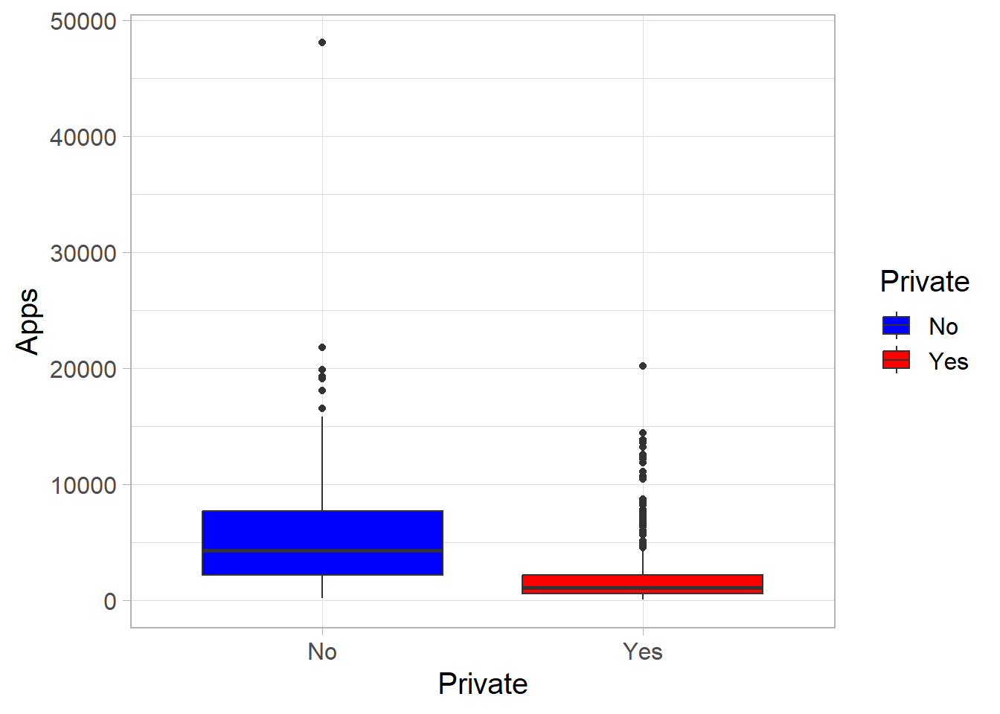 Vemos que las solicitudes son mayores en las universidades públicas.
4.3.2 Accept
boxplot_Accept = ggplot(College,aes(x=Private,y=Accept,fill=Private)) +
theme_light(base_size=15) +
geom_boxplot() +
scale_fill_manual(values=c(color1, color2))
boxplot_Accept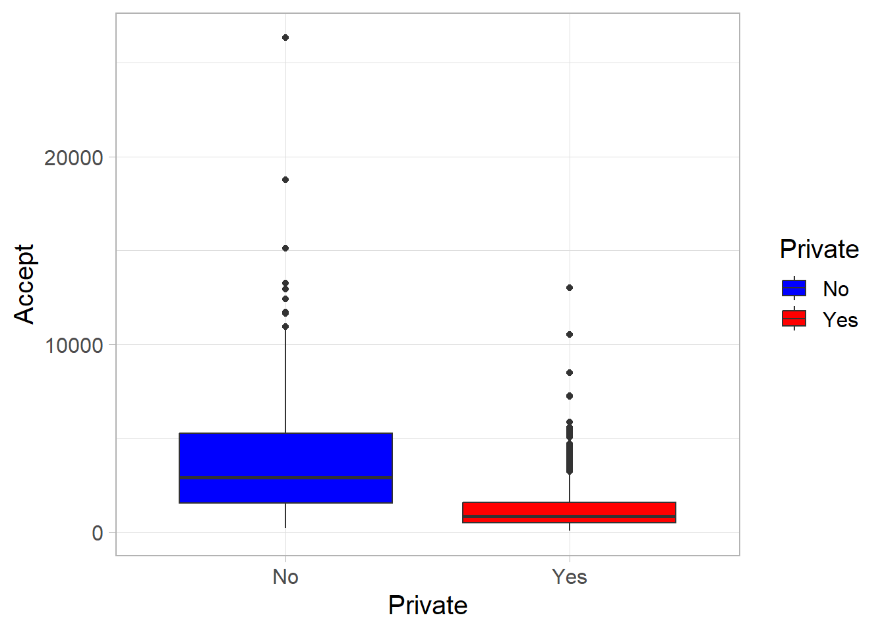 Vemos que en las universidades públicas se aceptan muchas más solicitudes que en las privadas, también hay que recordar que se reciben muchas más solicitudes.
4.3.3 Enroll
boxplot_Enroll = ggplot(College,aes(x=Private,y=Enroll,fill=Private)) +
theme_light(base_size=15) +
geom_boxplot() +
scale_fill_manual(values=c(color1, color2))
boxplot_Enroll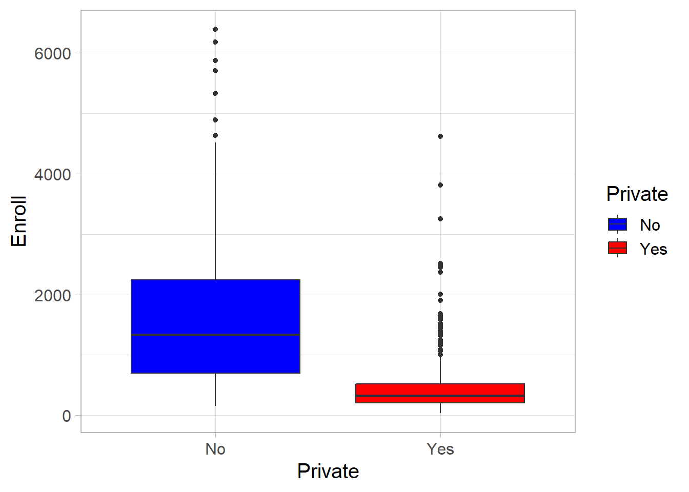 Vemos que en las universidades públicas se matriculan muchos más alumnos, hay que recordar que estas por lo general tienen muchas más plazas que en las privadas
4.3.4 Top10perc
boxplot_Top10perc = ggplot(College,aes(x=Private,y=Top10perc,fill=Private)) +
theme_light(base_size=15) +
geom_boxplot() +
scale_fill_manual(values=c(color1, color2))
boxplot_Top10perc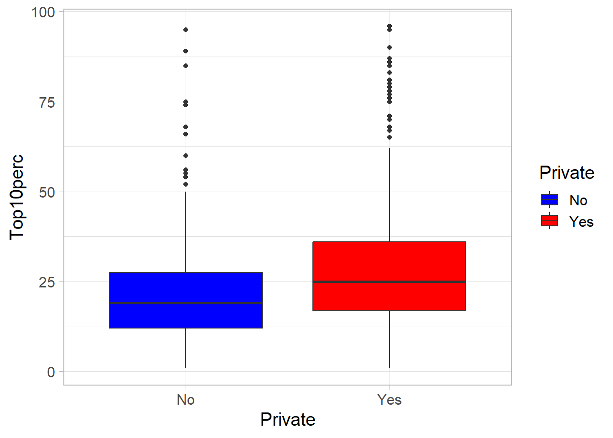 Vemos que los mejores estudiantes, por lo general, van a universidades privadas, posiblemente sea por las becas y los complicados procesos de admisión que tienen estas.
4.3.5 Top25perc
boxplot_Top25perc = ggplot(College,aes(x=Private,y=Top25perc,fill=Private)) +
theme_light(base_size=15) +
geom_boxplot() +
scale_fill_manual(values=c(color1, color2))
boxplot_Top25perc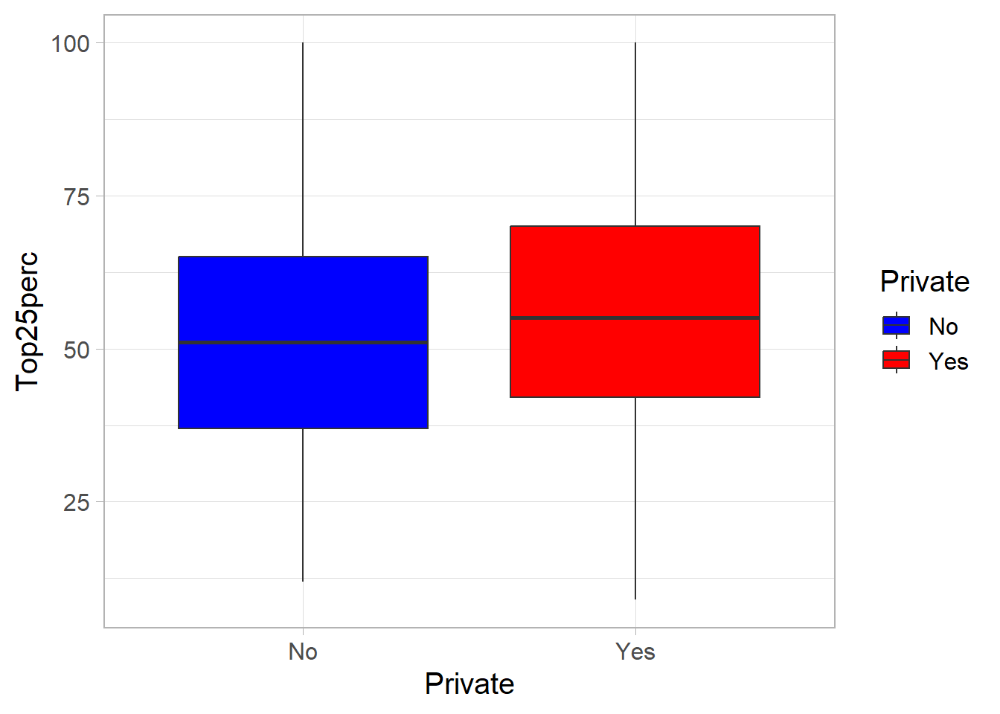 Vemos que si ampliamos al 25%, se iguala un poco más la cosa, pero siguen predominando las universidades privadas con los mejores alumnos.
4.3.6 F.Undergrad
boxplot_F.Undergrad = ggplot(College,aes(x=Private,y=F.Undergrad,fill=Private)) +
theme_light(base_size=15) +
geom_boxplot() +
scale_fill_manual(values=c(color1, color2))
boxplot_F.Undergrad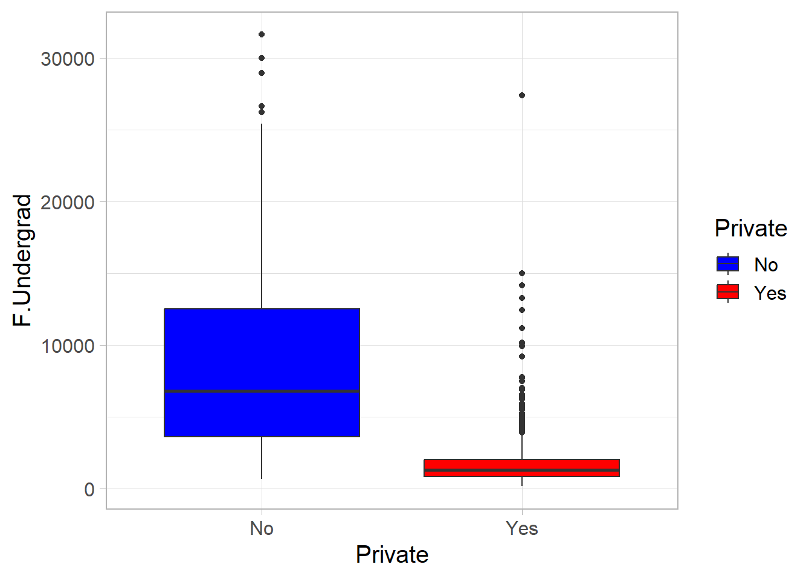 Vemos que el número de estudiantes a tiempo completo es mayor en las universidades públicas, otra vez, hay que recordar que esto es debido a que en estas últimas, hay muchos más alumnos.
4.3.7 P.Undergrad
boxplot_P.Undergrad = ggplot(College,aes(x=Private,y=P.Undergrad,fill=Private)) +
theme_light(base_size=15) +
geom_boxplot() +
scale_fill_manual(values=c(color1, color2))
boxplot_P.Undergrad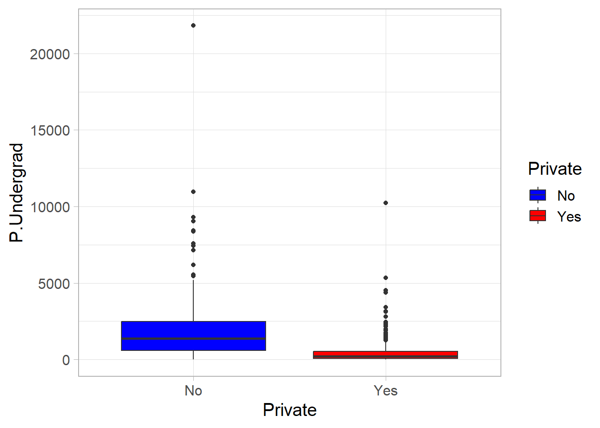 Vemos que los resultados son parecidos al gráfico anterior, nos obstante vemos que en las privadas hay muy pocos alumnos que están a tiempo parcial, todo esto depende en gran parte al número de estudiantes.
4.3.8 Outstate
boxplot_Outstate = ggplot(College,aes(x=Private,y=Outstate,fill=Private)) +
theme_light(base_size=15) +
geom_boxplot() +
scale_fill_manual(values=c(color1, color2))
boxplot_Outstate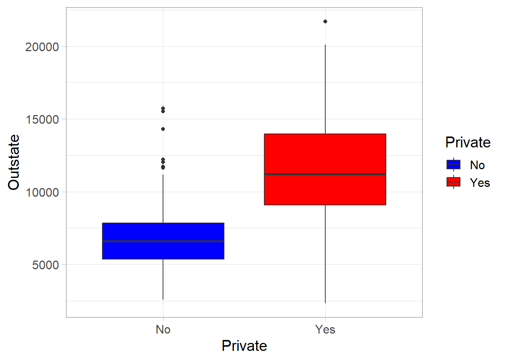 Vemos que en las universidades privadas hay más alumnos de estados extranjeros que en las públicas, esto nos puede dar a la idea de que si la gente se mueve de Estado con las consecuencias económicas que esto conlleva, suele ser para ir a una Universidad privada o con mayor prestigio
4.3.9 Room.Board
boxplot_Room.Board = ggplot(College,aes(x=Private,y=Room.Board,fill=Private)) +
theme_light(base_size=15) +
geom_boxplot() +
scale_fill_manual(values=c(color1, color2))
boxplot_Room.Board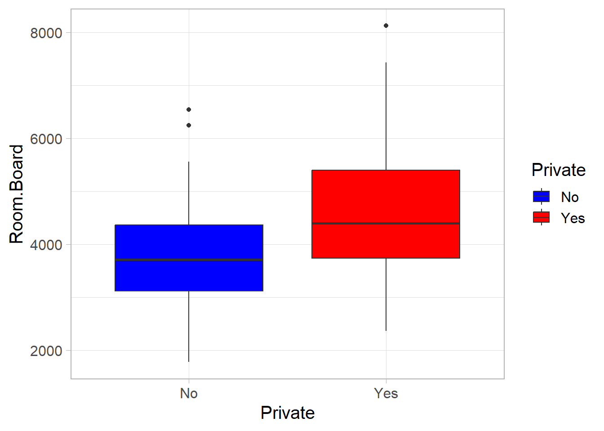 Vemos que los alojamientos y la comida por lo general son un poco más caros en las universidades privadas.
4.3.10 Books
boxplot_Books = ggplot(College,aes(x=Private,y=Books,fill=Private)) +
theme_light(base_size=15) +
geom_boxplot() +
scale_fill_manual(values=c(color1, color2))
boxplot_Books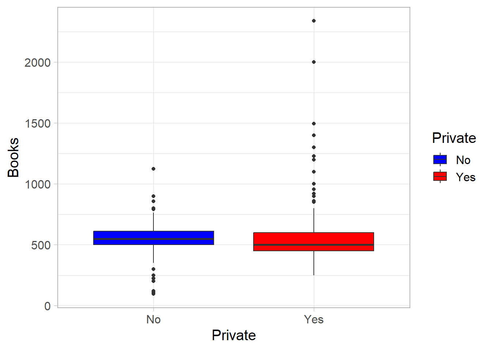 Vemos que el precio de los libros, es parecido en ambas universidades, con algún atípico en las universidades privadas.
4.3.11 Personal
boxplot_Personal = ggplot(College,aes(x=Private,y=Personal,fill=Private)) +
theme_light(base_size=15) +
geom_boxplot() +
scale_fill_manual(values=c(color1, color2))
boxplot_Personal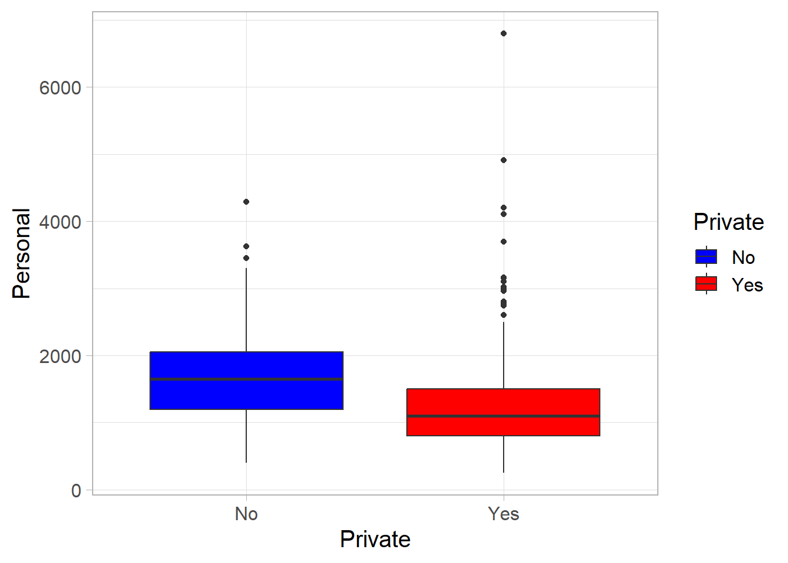 Vemos que en las universidades públicas, el gasto en personal es mayor.
4.3.12 PhD
boxplot_PhD = ggplot(College,aes(x=Private,y=PhD,fill=Private)) +
theme_light(base_size=15) +
geom_boxplot() +
scale_fill_manual(values=c(color1, color2))
boxplot_PhD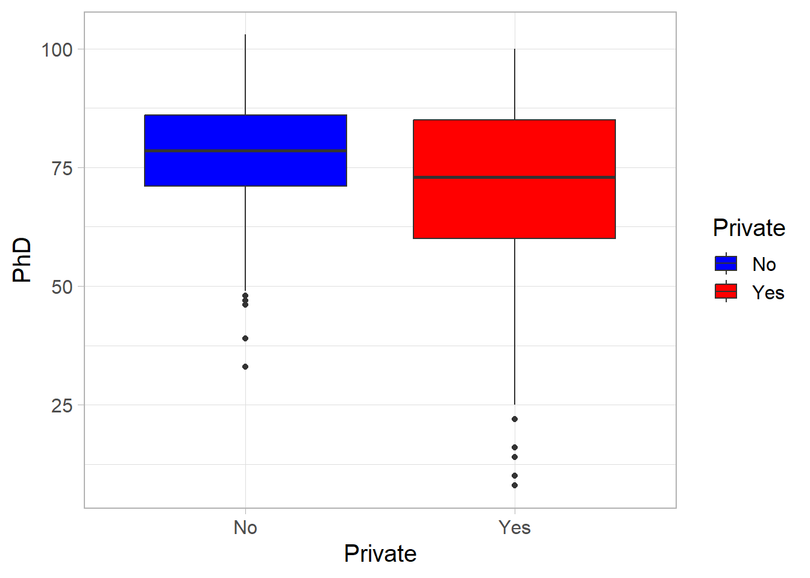 Vemos que el porcetaje de profesores que son doctores, es similiar en ambos tipos de Universidad, un poco más alto en universidades públicas y con menor dispersión.
4.3.13 Terminal
boxplot_Terminal = ggplot(College,aes(x=Private,y=Terminal,fill=Private)) +
theme_light(base_size=15) +
geom_boxplot() +
scale_fill_manual(values=c(color1, color2))
boxplot_Terminal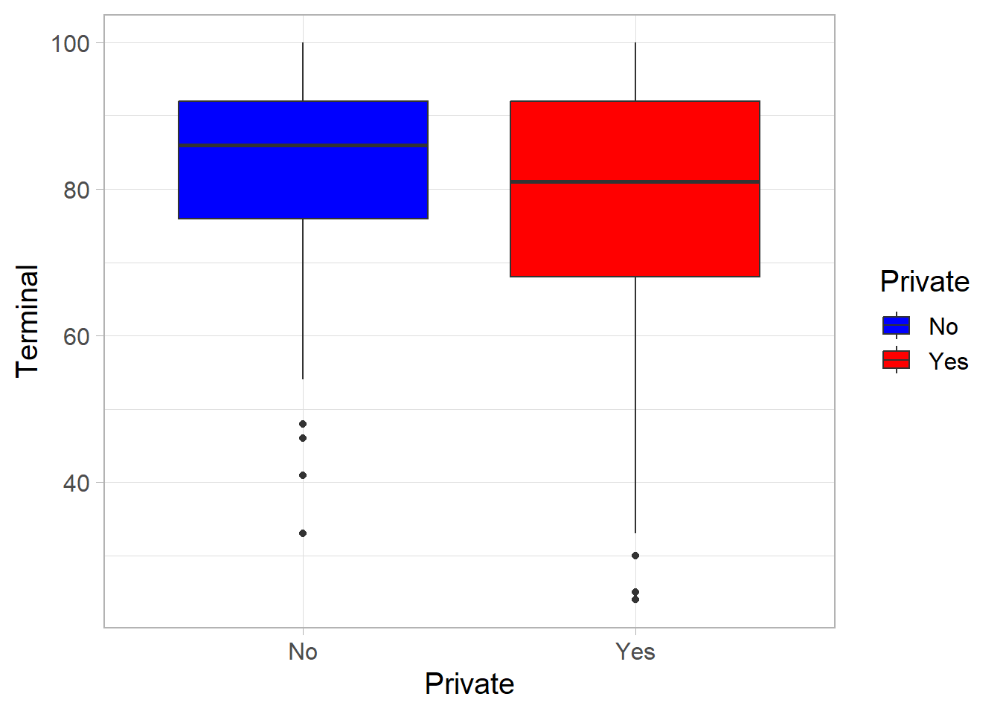 Los resultados son similiares al anterior.
4.3.14 S.F.Ratio
boxplot_S.F.Ratio = ggplot(College,aes(x=Private,y=S.F.Ratio,fill=Private)) +
theme_light(base_size=15) +
geom_boxplot() +
scale_fill_manual(values=c(color1, color2))
boxplot_S.F.Ratio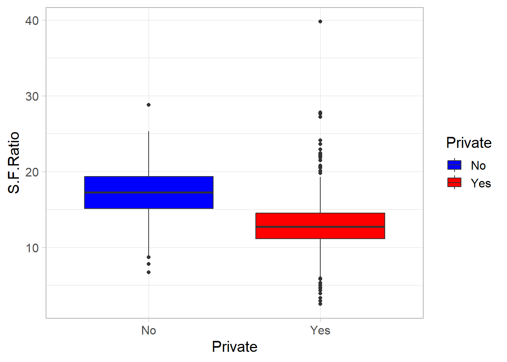 Vemos que el ratio alumnos/profesor es mayor en las públicas como se podía esperar.
4.3.15 perc.alumni
boxplot_perc.alumni = ggplot(College,aes(x=Private,y=perc.alumni,fill=Private)) +
theme_light(base_size=15) +
geom_boxplot() +
scale_fill_manual(values=c(color1, color2))
boxplot_perc.alumni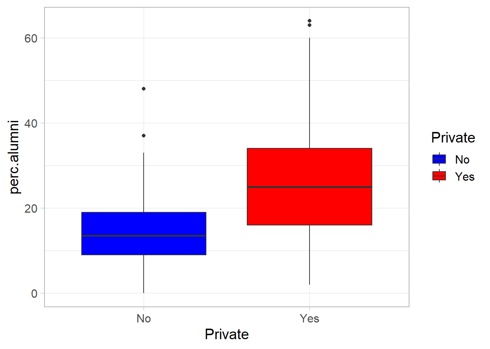 Vemos que los exalumnos de las universidades privadas, donan más dinero a sus universidades.
4.4 Apartado c
- Crear una nueva variable cualitativa, llamada
Top, agrupando los valores de la variableTop10perc. Para ello, dividir universidades en dos grupos en función de si la proporción de los estudiantes que provienen del \(10\%\) superior de su escuela secundaria supera el \(50\%\). Los dos valores de la variableTopdeben serSi, si pertenece a ese \(10\%\) superior, yNo, si no pertenece a dicho porcentaje. A continuación, obtener el número de universidades top y diagramas de caja de la variablePhDen función de la variableTop. ¿Que se observa?
4.4.1 Creación de la variable Top
Empezamos creando la nueva variable top
College$Top = ifelse(College$Top10perc > 50, yes = "Si",no = "No")College$Top = as.factor(College$Top)
summary(College$Top)## No Si
## 699 78Tenemos 78 Universidades Top y 699 fuera del Top
4.4.2 Diagrama de caja con Phd
boxplot_Phd_Top = ggplot(College,aes(x=Top,y=PhD,fill=Top)) +
theme_light(base_size=15) +
geom_boxplot() +
scale_fill_manual(values=c(color1, color2))
boxplot_Phd_Top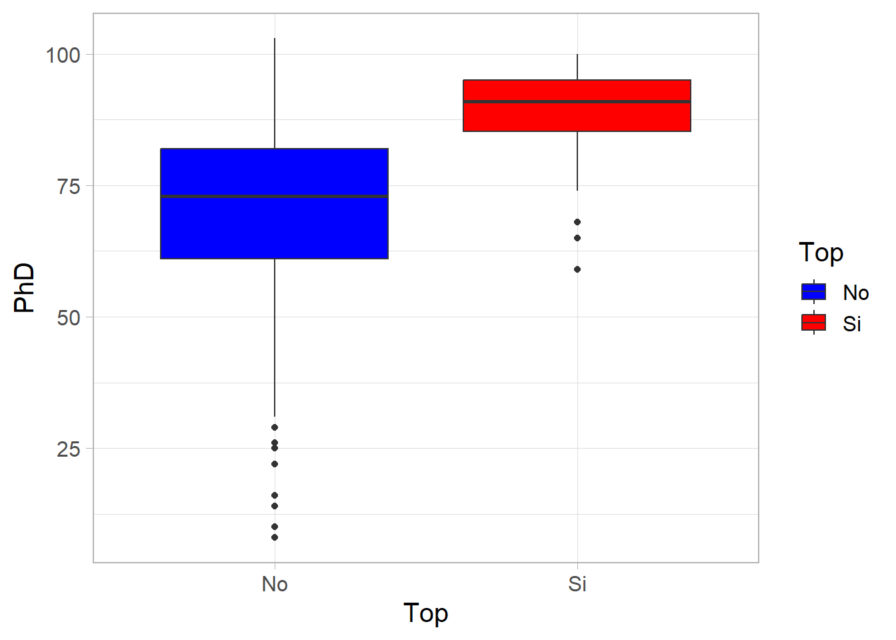 Vemos que los mejores Estudiantes prefieren las universidades cuyos profesores tienen más prestigio (Son doctores)